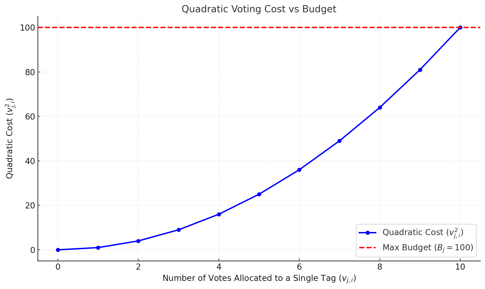
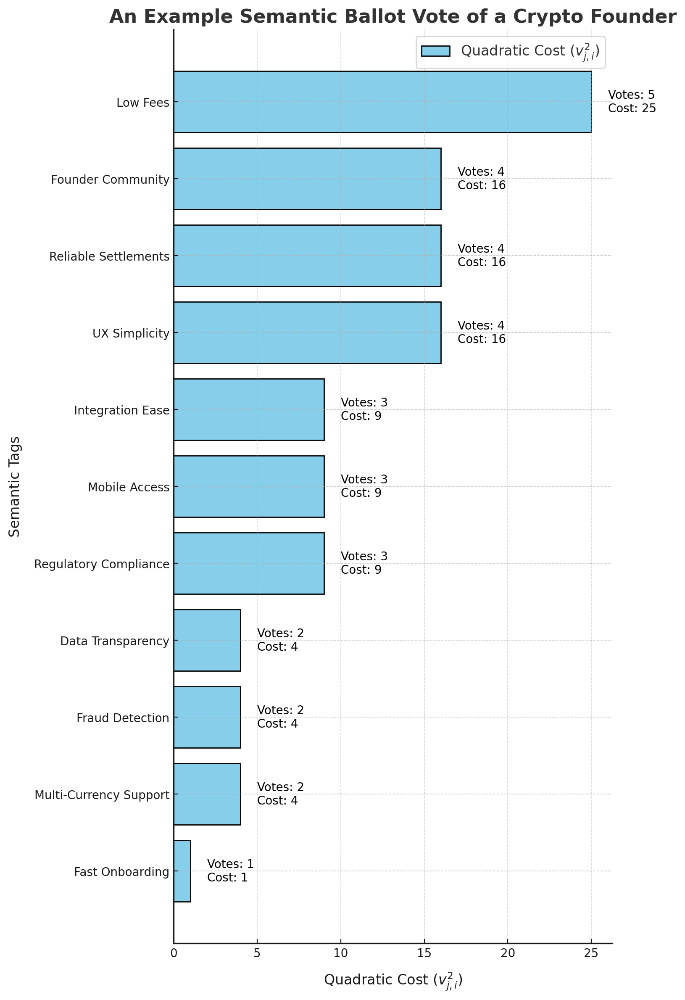
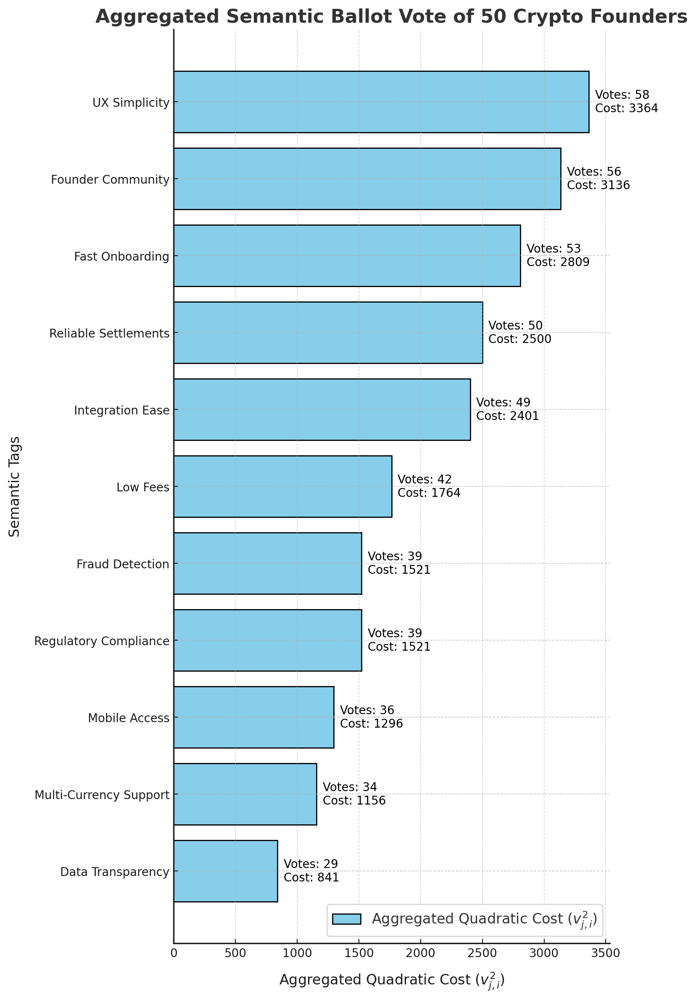
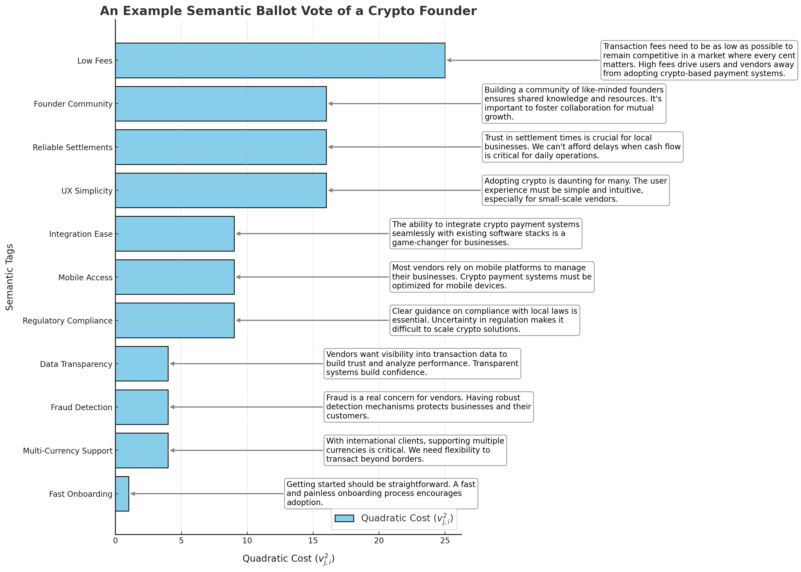
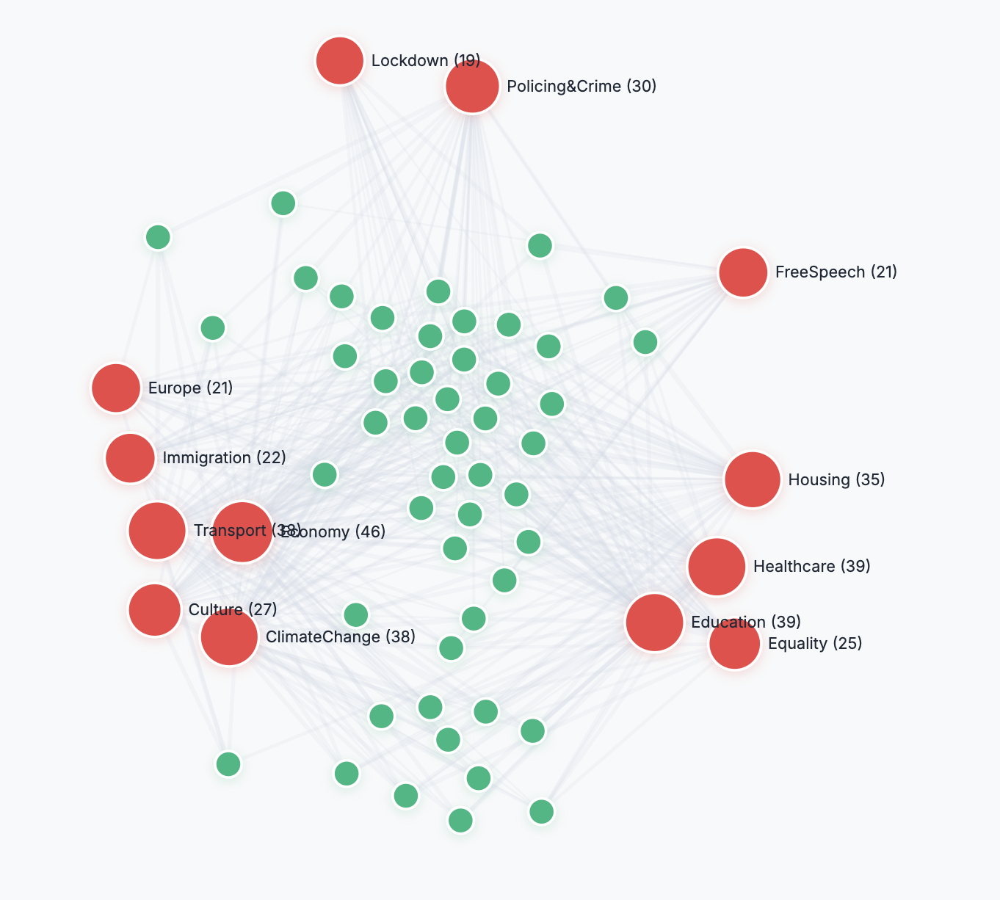
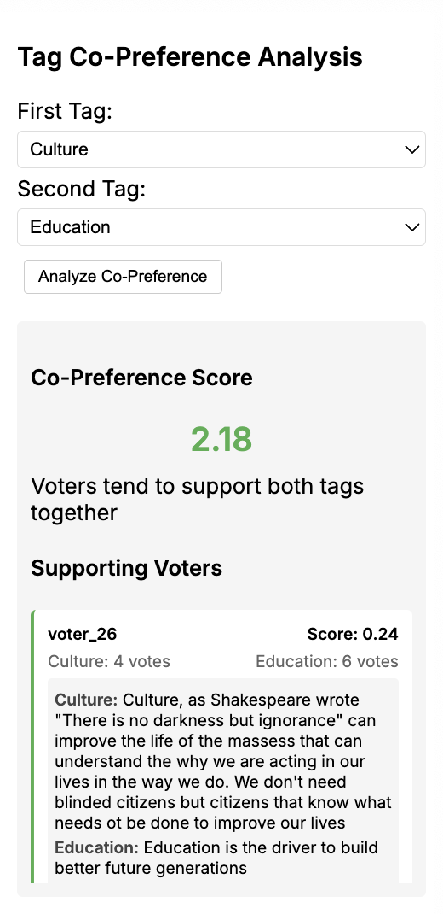
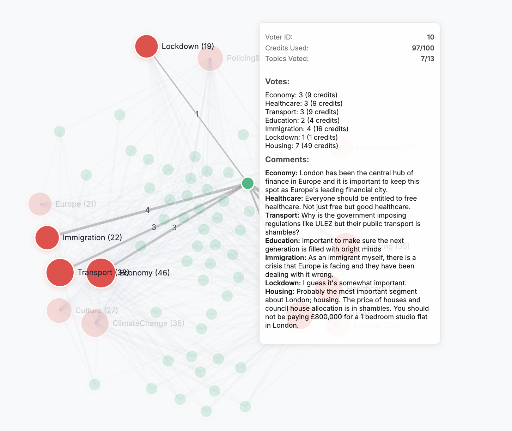

<section> <h1 style="font-size: 3em; margin-bottom: 0.5em;">#VOICE: A Mechanism for Preference Signaling and Emergent Semantic Governance</h1> <p style="font-size: 1.4em; margin-bottom: 1em;">A technical deep dive into the principles and mechanisms driving #VOICE.</p> <p style="font-style: italic; font-size: 1.1em; margin-bottom: 2em;">Exploring how semantic governance transforms decision-making.</p> </section> <section data-background-gradient="linear-gradient(45deg, #b71c1c, #c62828)"> <div style="background: rgba(255,255,255,0.1); padding: 2em; border-radius: 15px; box-shadow: 0 4px 6px rgba(0,0,0,0.1);"> <h2 style="color: #fff; margin-bottom: 0.8em;">Why DAOs Need Preference Signaling</h2> <ul style="color: #fff; font-size: 1.1em; line-height: 1.6;"> <li style="margin-bottom: 0.8em;">Coordinate diverse stakeholders with varying priorities.</li> <li style="margin-bottom: 0.8em;">Build trust with transparent and fair decision processes.</li> <li>Handle complex, multi-dimensional governance challenges effectively.</li> </ul> </div> </section> <section> <h2>Expanding the Equations: Semantic Tags and Preferences</h2> <p><strong>Equation:</strong> \( T = \{ t_1, t_2, \dots, t_n \} \)</p> <ul> <li>\( T \): Set of semantic tags.</li> <li>\( t_i \): Individual decision axis or tag.</li> </ul> <p><strong>Equation:</strong> \( P = \{ p_1, p_2, \dots, p_m \} \)</p> <ul> <li>\( P \): Set of participants.</li> <li>\( p_j \): Individual participant allocating votes across tags.</li> </ul> </section> <section> <div style="display:flex; align-items:center; justify-content:space-between; flex-wrap:wrap;"> <div style="flex:1; max-width:50%; text-align:left; padding-right:2em;"> <h2>Detailed Explanation of Voting Budgets</h2> <p>Participants allocate votes under budget constraints:</p> <p><strong>Equation:</strong> \( \sum_{i=1}^n v_{j,i}^2 \leq B_j \)</p> <ul> <li>\( v_{j,i} \): Number of votes participant \( p_j \) assigns to tag \( t_i \).</li> <li>\( B_j \): Total voting budget of participant \( p_j \).</li> <li>\( \sum_{i=1}^n v_{j,i}^2 \): Total cost of votes allocated by \( p_j \).</li> </ul> </div> <div style="flex:1; max-width:40%; text-align:center;">  </div> </div> </section> <section> <h2>Semantic Governance: A New Frontier</h2> <p>Semantic governance leverages SBV to enable:</p> <ul> <li><strong>Contextual Decision-Making:</strong> Surface nuances through semantic tags.</li> <li><strong>Deliberative Processes:</strong> Combine quantitative and qualitative feedback.</li> <li><strong>Alignment:</strong> Reveal hidden consensus and bridge diverse perspectives.</li> </ul> </section> <section> <div style="display:flex; align-items:center; justify-content:space-between; flex-wrap:wrap;"> <div style="flex:1; max-width:50%; text-align:left; padding-right:2em;"> <h2>Example of Semantic Ballot Voting</h2> <ul style="line-height:1.6; padding-left:1.5em;"> <li>Semantic tags visualize nuanced priorities.</li> <li>Participants rank preferences with weighted votes.</li> <li>Uncovers hidden patterns in collective priorities.</li> </ul> </div> <div style="flex:1; max-width:30%; text-align:center;">  </div> </div> </section> <section> <h2>Technical Deep Dive: Preference Aggregation</h2> <p><strong>Equation:</strong> \( W_i = \sum_{j=1}^m v_{j,i} \)</p> <ul> <li>\( W_i \): Total preference weight of tag \( t_i \).</li> <li>\( v_{j,i} \): Votes participant \( p_j \) assigned to tag \( t_i \).</li> <li>\( m \): Total number of participants.</li> </ul> <p>This step identifies the community’s most critical priorities.</p> </section> <section> <div style="display:flex; align-items:center; justify-content:space-between; flex-wrap:wrap;"> <div style="flex:1; max-width:50%; text-align:left; padding-right:2em;"> <h2>Aggregated Preference Analysis</h2> <ul style="line-height:1.6; padding-left:1.5em;"> <li>Analyzes collective input from large groups.</li> <li>Highlights shared goals and key differences.</li> <li>Empowers data-driven, inclusive decision-making.</li> </ul> </div> <div style="flex:1; max-width:30%; text-align:center;">  </div> </div> </section> <section> <div style="display:flex; align-items:center; justify-content:space-between; flex-wrap:wrap;"> <div style="flex:1; max-width:50%; text-align:left; padding-right:2em;"> <h2>A New Paradigm in Mixed Methods Data Collection</h2> <ul style="line-height:1.6; padding-left:1.5em;"> <li>Collects qualitative data alongside weighted preferences.</li> <li>AI enabled dialogues with participants.</li> <li>Rich contextual information from the ground level</li> </ul> </div> <div style="flex:1; max-width:40%; text-align:center;">  </div> </div> </section> <section> <div style="display:flex; align-items:center; justify-content:space-between; flex-wrap:wrap;"> <div style="flex:1; max-width:50%; text-align:left; padding-right:2em;"> <h2>A way to visalise the mind of a community</h2> <ul style="line-height:1.6; padding-left:1.5em;"> <li>Creates a directed semantic hypergraph.</li> <li>QV generated preference weightings shape clustering dynamics</li> <li>A new way to explore data</li> </ul> </div> <div style="flex:1; max-width:40%; text-align:center;">  </div> </div> </section> <section> <h2>Technical Deep Dive: Weighted Relationships</h2> <p><strong>Equation:</strong> \( w_{i,k} = \sum_{j=1}^m \frac{v_{j,i} \cdot v_{j,k}}{\max(B_j, 1)} \)</p> <ul> <li>\( w_{i,k} \): Edge weight between tags \( t_i \) and \( t_k \).</li> <li>\( v_{j,i}, v_{j,k} \): Votes participant \( p_j \) allocated to tags \( t_i \) and \( t_k \).</li> <li>\( B_j \): Total voting budget of participant \( p_j \).</li> </ul> <p>Weighted relationships reveal co-preferences and connections between tags.</p> </section> <section> <section> <div style="display:flex; align-items:center; justify-content:space-between; flex-wrap:wrap;"> <div style="flex:1; max-width:50%; text-align:left; padding-right:2em;"> <h2>Co-Preference Discovery</h2> <ul> <li><strong>Funding Alignment:</strong> Direct resources to shared priorities identified by overlapping preferences.</li> <li><strong>Stakeholder Matchmaking:</strong> Connect individuals and groups with similar needs and goals for collaboration.</li> <li><strong>Strategic Focus:</strong> Identify high-impact areas to maximize collective benefit.</li> <li><strong>Outcome:</strong> Discover hidden sites of alignment, even in spaces of radical disagreement.</li> </ul> </div> <div style="flex:1; max-width:40%; text-align:center;">  </div> </div> </section> <h2>Technical Deep Dive: Graph Analysis</h2> <p><strong>Equation:</strong> \( w_{\text{final},i,k} = \alpha \cdot w'_{i,k} + \beta \cdot q_{i,k} \)</p> <ul> <li>\( w_{\text{final},i,k} \): Final edge weight between tags \( t_i \) and \( t_k \).</li> <li>\( w'_{i,k} \): Quantitative co-preference weight.</li> <li>\( q_{i,k} \): Qualitative similarity score.</li> <li>\( \alpha, \beta \): Scaling coefficients balancing components.</li> </ul> <p>This integration combines structured votes with natural language feedback.</p> </section> <section> <div style="display:flex; align-items:center; justify-content:space-between; flex-wrap:wrap;"> <div style="flex:1; max-width:50%; text-align:left; padding-right:2em;"> <h2>Merge Quantitative and Qualitative Feedback</h2> <ul> <li><strong>Nuance Connections:</strong> Use natural language to surface nuanced connections.</li> <li><strong>Shape strength of relationships:</strong> Incorporate qualitative feedback to shape graph structure.</li> <li><strong>Scale the Graph:</strong>Multiple votes build bigger graphs</li> </ul> </div> <div style="flex:1; max-width:40%; text-align:center;">  </div> </div> </section> <section> <h2>Use Case: Dynamic Voting Budgets</h2> <p>Future iterations could explore dynamic and individualized voting budgets:</p> <ul> <li><strong>Adaptive Budgets:</strong> Adjust voting budgets based on participant engagement or past voting behavior (e.g., consistent and high-quality engagement amplifies voting power).</li> <li><strong>Equity Mechanisms:</strong> Ensure underrepresented voices receive enhanced voting power (e.g., important yet minority token holders can have a meaningful voice).</li> <li><strong>Outcome:</strong> Empower the most important voices to shape collective decisions.</li> </ul> </section> <section> <h2>Use Case: Cross-Community Collaboration</h2> <p>Semantic graphs could interconnect communities:</p> <ul> <li><strong>Shared Governance:</strong> Align priorities across multiple communities using preference signals.</li> <li><strong>Resource Allocation:</strong> Optimize funding and support by identifying overlapping goals.</li> <li><strong>Outcome:</strong> Identify and fund the most impactful public goods.</li> </ul> </section> <section> <h2>Use Case: Preference Drift Analysis</h2> <p>Analyze how community preferences evolve over time:</p> <ul> <li><strong>Longitudinal Studies:</strong> Track shifts in semantic tags and priorities.</li> <li><strong>Feedback Loops:</strong> Use historical data to refine governance processes.</li> <li><strong>Outcome:</strong> Generate a real-time understanding of community sentiment.</li> </ul> </section> <section data-background-gradient="linear-gradient(45deg, #1a237e, #311b92)"> <div style="background: rgba(255,255,255,0.1); padding: 2em; border-radius: 15px; box-shadow: 0 4px 6px rgba(0,0,0,0.1);"> <h2 style="color: #fff; margin-bottom: 0.8em;">Conclusion</h2> <ul style="color: #fff; font-size: 1.1em; line-height: 1.6;"> <li style="margin-bottom: 0.8em;">Captures nuanced community preferences.</li> <li style="margin-bottom: 0.8em;">Reveals hidden consensus and insights.</li> <li>Empowers communities to shape decisions meaningfully.</li> </ul> </div> </section> <section> <h2>Ready to Shape Governance with #VOICE?</h2> <p style="font-size:1.3em; margin-top:2em;">Ready to shape governance with #VOICE?</p> <p style="font-weight:bold; font-size:1.2em;">Let’s build the future together.</p> </section>